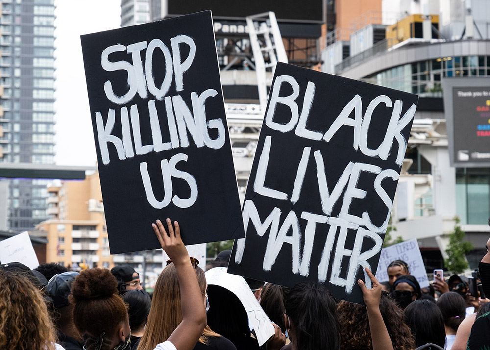
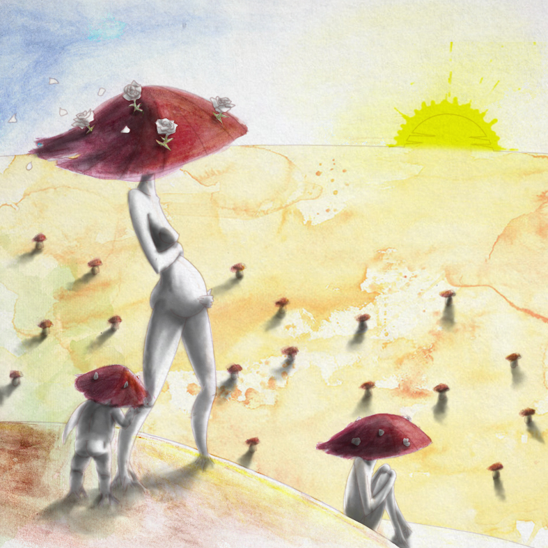
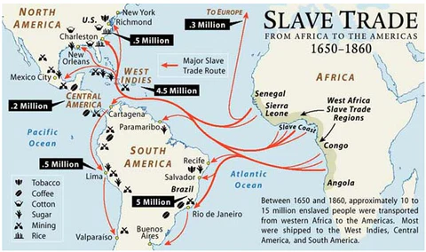

Literature vs. Real Life.
The experiences of characters depicted in literature is often a reflection of the discrimination faced by marginalized groups in real life. The reflectionism museum is a visual representation of the fundamental literary idea of reflectionism.

A story centered around a boy distancing himself from his mother due to anti-asian racism.

Protests against anti-asian racism a few years prior due to a racist murder that parallels the story.

And the Mountains Echoed.
Khaled Hosseini • May 21, 2013
And the Mountains Echoed by Khaled Hosseini is a text that follows the life of multiple characters after Saboor decides to sell his daughter Pari to support his family. Through the multiple chapters, each in the perspective of different characters, the text explores themes of love in human relationships by showing how characters stay connected regardless of physical (different countries, different backgrounds) and generational (living in different times) barriers.
Real Life →Islamaphobia After 9/11.
2001 - Present
A few years before the publishing of And the Mountains Echoed, a large spike in Islamophobia occured as a result of the 9/11 terrorist attacks.
The story is centered around human love regardless of background, and the connections between Afghan and non-Afghan characters are a reflection of the ideals that muslims held while fighting back against Islamaphobia.
Literature →
The Danger of a Single Story.
Chimamanda Ngozi Adichie • Oct 7, 2009
The Danger of a Single Story by Chimamanda Ngozi Adichie is a speech that discusses why it is dangerous to believe in one single perspective. For example, Adichie recounts how she was stereotyped in university because she was African, and how she fell victim to a single story about Mexican immigration, among other examples.
Real Life →
Anti-black racism & stereotyping
Present
In the modern day, one of the most prevalent forms of anti-black racism is microaggressions through stereotyping. In her speech, Adichie discusses instances of classist stereotypes against her due to her race. Adichie mentions how her professor stereotyped Africans to be poor and uneducated, resulting in an unfair grade on her assignment. These experiences are a direct reflection of the class hierarchy-based stereotyping faced by black people today.
Literature →

Mad Woman.
Taylor Swift • Jul 24, 2020
Mad Woman by Taylor Swift is a song that fights against traditional gender expectations of women. Through various literary devices, such as violent lyrics juxtaposed with soft delivey, Swift details experiences of being manipulated while challenging traditional gender norms.
Real Life →
Modern gender expectations.
Present
In the modern day, gender roles exist as normalized behaviours for men and women. For example, the idea that women should be submissive. In her song, Swift's experiences and literary devices are a reflection of the ideals of fighting against these normalized gendered behaviours.
Literature →

How Long 'til Black Future Month?
N.K. Jemisin • Nov 2018
How Long 'til Black Future Month? by N.K. Jemisin is an essay that discusses the lack of black diversity in speculative fiction works, which Jemisin experienced firsthand growing up.
Real Life →
No Black Media Representation
Present
In Jemisin's essay, she cites her experiences watching The Jetsons, among other speculative fiction works, only to not find any black characters. Her experiences reflect the lack of black representation in media today. For example, only 6% of the writers, directors, and producers of US-produced films are Black.
Literature →
The Paper Menagerie.
Ken Liu • 2011
The Paper Menagerie by Ken Liu is a story that follows Jack, a young boy who was born in America to a white father and Chinese immigrant mother. As he grows up, he begins neglecting his Chinese mother as a result of his experiences with anti-asian racism, which leads to him not caring for her until after her death, regardless of her love for him.
Real Life →
Anti-asian Racism.
1982 - Present
In 1982, Vincent Chin was murdered in an act of anti-asian racism, after being accused of taking the jobs of white auto manufacturers because he was Asian. The inciting incident in The Paper Menagerie parallels this racism against Asian products, with Jack's friend calling his toy "cheap Chinese garbage", and insulting him because of it. The anti-asian racism in the story reflects anti-asian racism in real life.
Literature →
Mushrooms.
Sylvia Plath • 1960
Mushrooms by Sylvia Plath is a poem that explores the idea of women uprising against classist barriers in society through a metaphor of mushrooms growing.
Real Life →
The Second Wave of Feminism.
1960s - 1970s
Starting in the 1960s, the "second wave of feminism" began. Plath's poem, published around the same time, reflects the ideals of Women fighting against discrimination in the form of classism. For example, as a result of the second wave of feminism in 1963, president John F. Kennedy signed the Equal Pay Act, which stated that women could no longer be paid less than men for doing comparable work.
Literature →Black Panther.
Ryan Coogler • Feb 16, 2018
Black Panther by Ryan Coogler is a film that is set in the fictional African country of Wakanda, which is filled with futuristic technology derived from metal from a meteor. Black panther explores the consequences of African Diaspora, with the main villain Killmonger's beliefs directly contrasting those of the Wakandan king T'Challa, which results in a battle to the death between the two.
Real Life →
African Diaspora.
Present
African diaspora is the dispersion of Africans from their homeland. African diaspora specifically is largely a result of colonization and slavery. This form of discrimination is reflected in Black Panther, with Killmonger being a product of the diaspora.
Literature →

Spider-Man 3.
Sam Raimi • May 4, 2007
Spider-Man 3 by Sam Raimi is a film that follows Spider-Man through his battle against an alien symbiote, the sand man, and the new goblin. In the movie, Spider-Man's relationship with his girlfriend M.J. falters after she discovers he has kissed Gwen Stacy.
Real Life →
Modern Gender Expectations
Present
In the modern day, gender roles exist as normalized behaviours for men and women. In Spider-Man 3, Gwen Stacy's character serves purely as a sexual temptation or damsel in distress for Spider-Man. One-dimensional characters such as Gwen Stacy are often symbols, with Gwen stacy's sole purpose to symbolize the gendered expectations of women to be submissive.
Literature →